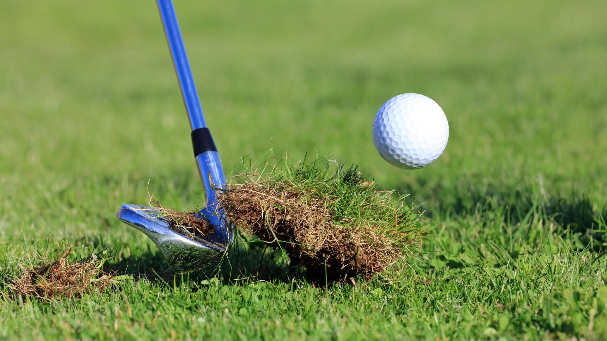
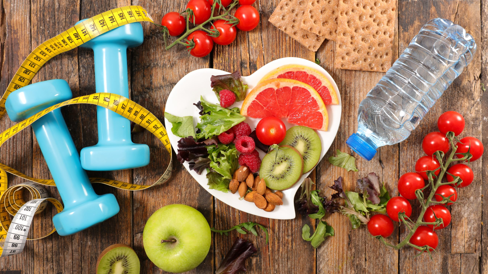

Daily Scratch Tracker
Put in the Work.
Lower Your Handicap.
Track your daily habits that move you toward shooting lower golf scores
Progress & Streaks
Your last 7 days at a glance.
Longest Streak
0
daysTotal Daily Tasks Completed
0
7-Day Completion
0
%Putting Practice Tracker

Hit some putts...
Do some kind of putting drill that lasts more than 10 minutes.
Whether you are out there for 10 minutes or hours, doing a drill that improves your putting confidence is a must for continued improvement.
Chipping Practice Tracker

Practice your chipping...
Hit out of a bunker, hit some bump and runs around the green, practice your chips from 10-50 yards, maybe even practice some flop shots for fun.
You hit 70% of all golf shots from within 100 yards. You must become familiar with your wedge on the road to scratch.
Health Tracker

While golf is not the most physcially demanding sport, to be to be the best of the best you must stay in good shape and monitor your health.
Wether its going for a walk or run, playing a sport outside with friends, doing an arm or leg day at the gym, or even just eating especially healthy and watching your macros that day...
Go to bed knowing you were healthily productive that day, and that your body is better off than if you did nothing.
Round Tracker
More Imporant Than All the Rest...
On days you're able to get out on the course, forget about all the other tasks that day.
Still try and complete them but prioritize this over all.
Whether it is 3 holes or 18 holes, nothing improves your golf game more than getting out there and playing